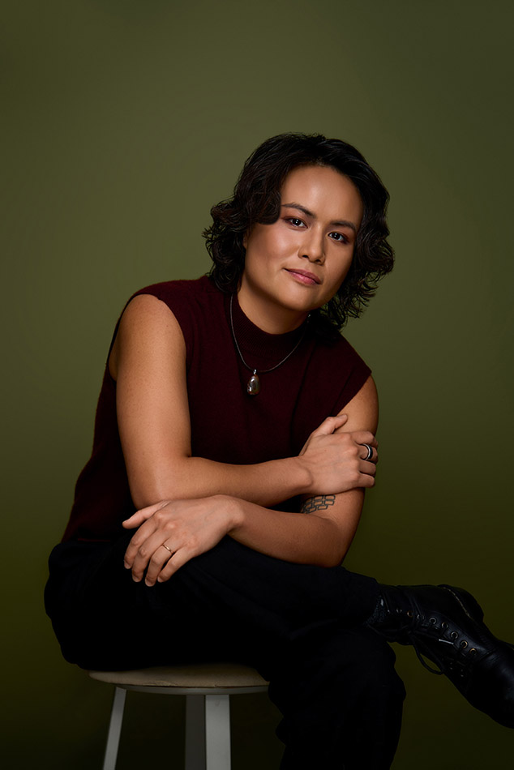
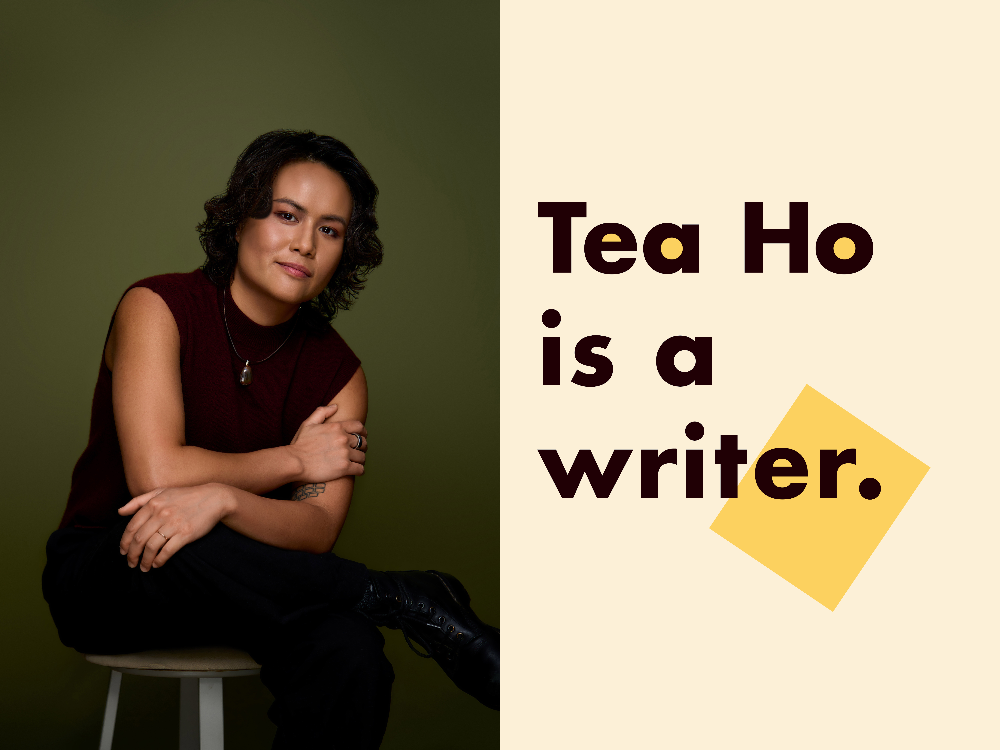

Tea Ho is a writer whose notable accomplishments include surviving life in a frat house for over two years, getting inducted into a now-defunct secret society, and receiving a phone call from their uncle — after he died.
Their most recent screenwriting credits include Rian Johnson's Poker Face (Peacock), Park Chan-wook's The Sympathizer (HBO), and Erica Lipez's We Were the Lucky Ones (Hulu).
They're a proud alum of the Sundance Episodic Lab and Lena Waithe's Hillman Grad Mentorship Lab. Before they pivoted to the life of a screenwriter, Tea worked as a software engineer, product designer, and wedding photographer.
Tea's genre-bending work is best described as unhinged with heart. It often blends elements of suspense, absurdity, and dark humor before sucker-punching you in the feels. Tea hopes their stories can inspire you to find the will to live when the world is simultaneously on fire and sinking underwater.

Tea Ho is a screenwriter whose notable accomplishments include surviving life in a frat house for over two years, getting inducted into a now-defunct secret society, and receiving a phone call from their uncle — after he died.
Their most recent screenwriting credits include Rian Johnson's Poker Face (Peacock), Park Chan-wook's The Sympathizer (HBO), and Erica Lipez's We Were the Lucky Ones (Hulu), based on Georgia Hunter's best-selling novel.
They're a proud alum of the Sundance Episodic Lab and Lena Waithe's Hillman Grad Mentorship Lab. Before they pivoted to the life of a screenwriter, Tea worked as a software engineer, product designer, and wedding photographer.
Tea's genre-bending work is best described as unhinged with heart. It often blends elements of suspense, absurdity, and dark humor before sucker-punching you in the feels. Tea hopes their stories can inspire you to find the will to live when the world is simultaneously on fire and sinking underwater.
Jeff Portnoy at Bellevue Productions
Vern Co at Gersh
☺